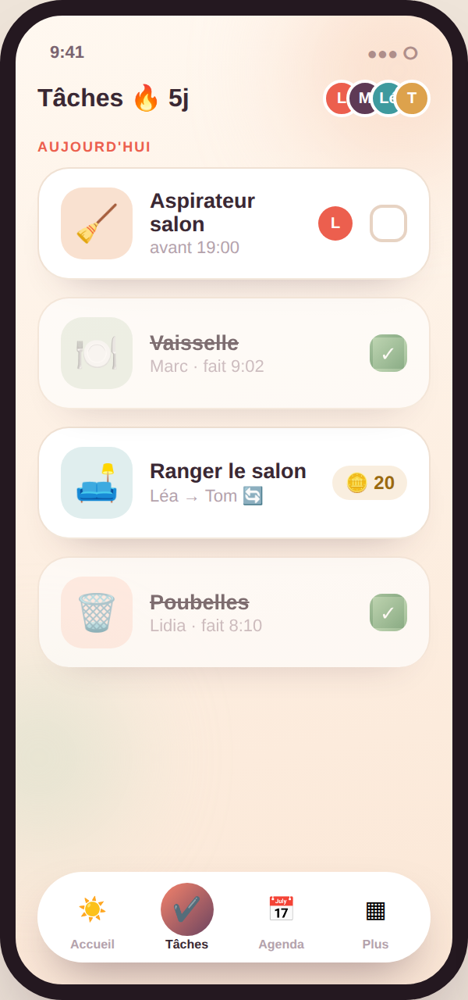

Corvées & tâches
Des corvées justes, enfin
Assignez les tâches en fixe ou en rotation, avec un gage si ce n'est pas fait et une récompense si ça l'est.
- Rotation automatique entre les membres
- Gage (points, amende) et récompense
- Moteur d'équité : qui devrait prendre la suivante
